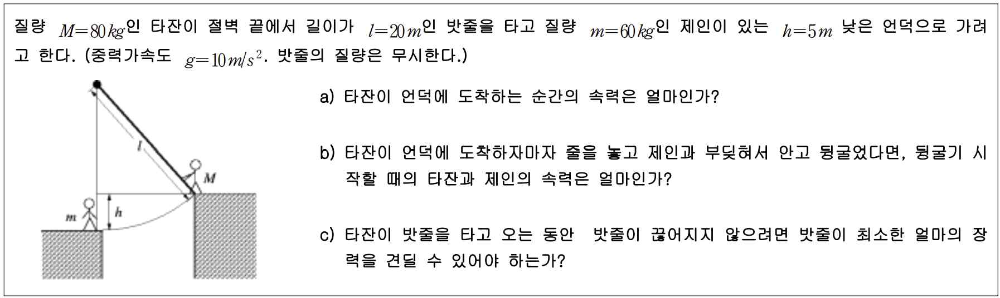

문제 4
질량 \(M = 80 \, \text{kg}\)인 타잔이 절벽 끝에서 길이가 \(l = 20 \, \text{m}\)인 밧줄을 타고 질량 \(m = 60 \, \text{kg}\)인 제인이 있는 \(h = 5 \, \text{m}\) 낮은 언덕으로 가려고 한다. (중력가속도 \(g = 10 \, \text{m/s}^2\). 밧줄의 질량은 무시한다.)

(a) 타잔이 언덕에 도착하는 순간의 속력은 얼마인가?
(b) 타잔이 언덕에 도착하자마자 줄을 놓고 제인과 부딪혀서 안고 뒹굴었다면, 뒹굴기 시작할 때의 타잔과 제인의 속력은 얼마인가?
(c) 타잔이 밧줄을 타고 오는 동안 밧줄이 끊어지지 않으려면 밧줄이 최소한 얼마의 장력을 견딜 수 있어야 하는가?